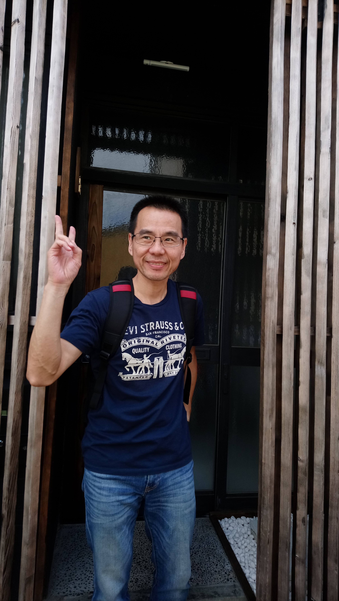

| Date Atteneded | Institute Name | City | Degree/Major |
|---|---|---|---|
| Sep/1985~Jun/1987 | National Taiwan University Of Science and Technology | Taipei, Taiwan | Bachelor/Electronic Engineer |
| Sep/1987~Jun/1989 | National Taiwan University Of Science and Technology | Taipei, Taiwan | Master/Computer Science |
I was invited to join Edimax to lead IOT department for the brand name customer - Honeywell to build IP Camera cloud recording using AWS platform w/ PKI security. The whole ECO system has been operating since Oct, 2017. We build the IP camera and most of cloud system except user manager, provision server which own by Honeywell. There are 3 developed departments under my management - FW, APP(iOS and Android) and Cloud(Develop and operation). In addition to IP camera IOT devices, we also develop AixBox and SmartPlug. All these IOT devices are connect to our own develop full features PKI cloud system to provide security connection. We also provide the 99.9% availability to Honeywell IP camera/cloud system. There are more than 80K cameras online in Honeywell cloud and more than 100+ terabytes clip storage for event recording.
I was invited to join in AmTRAN as a senior director responsible for the 1st connect TV of VIZIO –VIA Yahoo TV since 2009 at beginning. The 1st generation of VIA TV is based on Yahoo platform using BRCM 3549. The connect TV for VIZIO, BRCM and AmTRAN is a big challenge for several areas which were never happened in legacy TV before – Linux, WiFi, Internet, Yahoo, 3rd party stream apps certificate– Amazon, Netflix, Vudu…etc.. F/W update, connect TV is very unstable compare to legacy TV. The 1st BRCM platform took about 10 months to enter MP since I joined and MP date is about 3 months later than original plan. I was later in charge all TV biz of VIZIO product line after 1st generation of VIA TV is entered MP. There are many TV SOCs for VIZIO project - MTK 5385, 5395, 5396 and 5580, MStar 8220, Sigma Design UXL were developed during 5 years of my involvement. Beside VIZIO project, I had also contributed my effort to other main project lines – JVC and Sharp due to VIZIO biz was shrunk down. We had implemented one Android TV by using MStar 8830 for JVC TV which is MP on 2014/M. This TV has passed Google GMS certification. The Sharp connect TV is the latest connect TV which I am working on by using Realtek 2986 platform. All of the models are successfully MP by Jan of 2015. In the last stage in AmTRAN, I am responsible to work w/ AvatarMind Robot Tech corp located in Nanjing, China to build a companion ROBOT target for child age from 1 to 8 years old. This ROBOT has face/voice recognition, home security, obstacle avoidance, education...etc functions. My main task is to design and lead the team to develop the factory build process and facility to manufacture ROBOT in AmTRAN factory.
The main biz segment of Mototech is the ODM manufacturer for Cisco cable and satellite SETOP box. I was a senior manager leading a team to work w/ Cisco Atlanta and India team for Hong Kong Cable satellite box by using ST5105 satellite solution.
We spent about 6 months working w/ Cisco US and India team and 2 months of comprehensive test at HKC operation center. We successfully replace the original Nargra box to Cisco box.
I am a technical lead of DTV division of Taiwan region. There are FAE, AE and PM groups under my management. The major mission is to sell Xillion family chips – X240, X241, X243, X245 w/ turn-key ATSC solution for TWN ODM TV manufactures – Wistron, DigiMedia, Foxconn, Delta, Tatung. The major tasks are helping ODM customer to get design award from brand name customers such as Sony, Toshiba, VIZIO, Westinghouse. Once customers project kick off, I’ll work out the resource supporting plan for customers by gather DTV division resources from all over the world of ATI – Toronto, Boston, Shanghai, TPE. Our supporting will help customers all the way from EVT/DVT/PVT till MP that covers from OEM brand name customer spec, product quality endurance and ODM manufacturing process factory tuning
During 2 years service in AMD DTV division. We had sold more than 3 million Xillion chips to Delta, Foxconn, Winstron, Digimedia, Tatung for OEM/Brand name customers Westinghouse, Syntax and VIZIO accordingly.
I am a leader of platform/driver team of CE S/W division in Accton. The main developed product is WiFi SkypePhone. The WiFi SkypePhone was based on TI OMAP1710 , Marvell 8385 platform and embedded linux OS. There are 7 senior engineers to develop BSP and driver for the SkypePhone. The major development effort is on the power management for the handheld device. We did put exhausted develop effort to improve power saving of SkypePhone.
The WiFi SkypePhone developed in Accton was the first handheld device that passed the Skype formal validation process in the world.
PCT is the child corp. of Proton’s group in Taiwan, The mission of PCT was research and develop new advance digital consumer products for the Proton group. There are several products I had involved for this working period. The H.324 VideoPhone was based on TI C82 chip , It took us 3 years to make this product into MP to our ODM customer in Japan, There are 2 models for this product series – one is standalone and the other is the setop box. After finished the VideoPhone product, we moved to develop a DSC product, this was also an ODM project from Japanese partner. The project was using the TI DSC-25 chip to build a very small event recorder. This product is aim for the motion video recording on the car accident that is requested from Japanese insurance company. This mini event recorder took about 1 year to accomplish for the customer. Finally the remaining years in Proton, I was concentrate on the DTV and LCD TV product development. For the DTV product, we are starting from ATI X220 development and ship to USDTV for several thousand boxes. Later on, we continuous develop on the X225/X226 to work with different customers that include AVTrex, Paltronic, PauseTV, Cident …etc. One thing to highlight here is that we have developed an IDTV for Australia customer call DGTec, this IDTV was integrated the X225 and Pixelwork P181/1231 platform, we implemented DVB-SI and CC protocols for the DVBT standard by ourselves. For the LCD TV products series, we adopted the Pixelwork P181/1231 platform to build up NTSC, PAL for Europe and Mainland China market. Finally, we also development the DVBT setop box for mobile vehicle in Taiwan by adopting st5518 solution.
The VideoPhone H.324 product sold to 2 ODM Japanese customers about several thousand units in standalone and setop box two different models. The mini video recorder had been shipped to one ODM customer about several thousand units. We had sold several thousand DTV setop box to different customers. For the LCD-TV product, we are the first LCD-TV that could support 1080P signal among all the Taiwan manufacturers or designers. There are several thousand unit of legacy LCDTV and IDTV had been sold all over the world. In the mean time, Both of the VideoPhone and LCD-TV had won the Nation Award of Excellence in Taiwan during the product release year.
Institute For Information Industry is the semi-government organization in Taiwan, the major mission for III is to research and development the new IT technology and transfer it to the industry. During the period of working in III, the major job of me was working on TCP/IP protocol suite product. In the technical portion we have implemented and ported all the TCP/IP protocol suite to different OSs that include AT&T SVR3.2 , DOS, Netware 3.x, Win 3.x. In addition to this we also extend this TCP/IP technology to build some PC software based router. In the working period of III, I had been through from a junior entry engineer to a senior engineer, and finally turn into a team manager leading 16 extraordinary engineers.
We had transfer this TCP/IP technologies to Inventec, Systex, Zero one Corp. Finally we had made a commercial S/W package called WinSpan – TCP/IP protocol suite for Win3.x that was also include NFS and X-window protocols version. The WinSpan product had also sold in the Japanese market through Dynalab corp. distribution channel product name called DynaSpan. By through the bundle with modem to access ISP service provider, the product name called WinSpan lite – TCP/IP package with PPP dial up only running on Win3.x. The WinSpan lite should sell about several hundred thousand copies in the modem bundle business market.